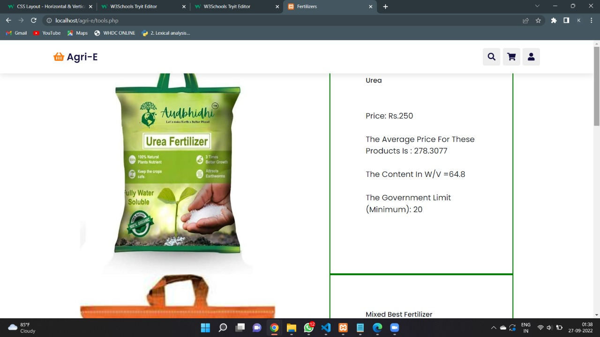

Proudly-pride
"Proudly Pride" is a vibrant website born out of a desire to infuse life with joy and unity. It features a delightful
unicorn game where players collect pride flags across three engaging levels. The Rainbowchat connects users within the same community,
fostering idea-sharing and fun interactions. A unique random flag generator raises awareness about diverse community flags, emphasizing
their significance. Built with HTML, CSS, Firebase, and React, the site showcases a sleek starting page and dynamic chat functionality.
Challenges, including mastering CSS layout and navigating new technologies like Firebase and API integration, were overcome in the pursuit
of creating a functional and enjoyable platform. The project marks a journey of learning, from manipulating API data to crafting soothing
CSS animations. Looking ahead, "Proudly Pride" aims to expand with detailed flag descriptions, more games, events, and community moderation
features. check here
Agri-E

My first ever hackathon project!
I won an appreciation for this project in the hackathon competition, I developed a small E-market website catering to agricultural products. This platform is designed to
serve both customers and sellers, with a primary focus on providing optimal products to farmers who may have limited knowledge about specific items. Sellers also benefit by offering discounts and advertisements directly on the website.
Key features of the website include:
1. Chat Bot: A user-friendly chat bot is implemented to assist and guide users, addressing their queries and providing valuable
information.
2. Quality/Quantity Display: The website ensures transparency by displaying information about product quality and quantity according to
government regulations. This empowers farmers to make informed decisions.
3. Advertisements: Sellers can promote their products through advertisements on the website, increasing visibility and attracting
potential customers.
4. Average Pricing: The platform provides average pricing information, giving users a benchmark for fair market values.
This project is a simple static website developed specifically for the hackathon, aiming to address the needs of both farmers and sellers in the agricultural market.
Check my source code here!
Memelet
Inspired by the stress-relieving power of memes, my project is designed to not only help you create memes but
also display them, igniting your passion for humorous content.
Built using Velo by Wix, along with HTML, CSS, and JS for code embedding, the platform tackles the challenge of making meme creation and
enjoyment accessible to all. Despite encountering backend issues along the way, I triumphantly overcame them, showcasing my ability to
create engaging widgets through Velo by Wix.
Throughout the development process, I learned valuable lessons, particularly in the realm of displaying analytical information from
datasets—an area I aim to further explore and refine. The project, crafted with HTML, CSS, JS, and Velo, earned recognition by winning a
hackathon competition hosted by MLH, marking a proud accomplishment in my journey of meme-inspired innovation. try out my site here!
Nakshatra
Nakshatra, an astronomy club website developed during my HCL internship, serves as an interactive platform connecting astronomy enthusiasts in a dedicated community. The application encompasses various features to engage and educate its members:
1. Astronomy Community Hub: A virtual meeting place for users, fostering connections and discussions among astronomy enthusiasts.
2. Real-Time Space Weather Alerts: Utilizing NASA's DONKI API, the website provides timely updates on space weather conditions, keeping members informed.
3. Space Picture of the Day: A daily snapshot of space, fetched through API calls (APOD), serves as a learning tool for members.
4. Login/Membership Portal: Users can register accounts with password security using MD5 hashing.
5. Space Quiz: An entertaining and challenging feature created with the Scratch tool.
6. Asteroid Exploration: Users can find asteroids close to Earth, accessing detailed information through the NeoWs API.
7. Host Events: The website facilitates event scheduling and displays upcoming events using PHPMyAdmin and a local database.
Future Scope of the Project:
Looking forward, Nakshatra aims to evolve into a collaborative hub for idea generation within the astronomy community.
Additionally, plans include implementing an online book borrowing system focused on astronomy, enhancing members' knowledge through
accessible literature. These initiatives underscore our commitment to knowledge dissemination and continuous enrichment within the
astronomy club.
Check here for source code and details